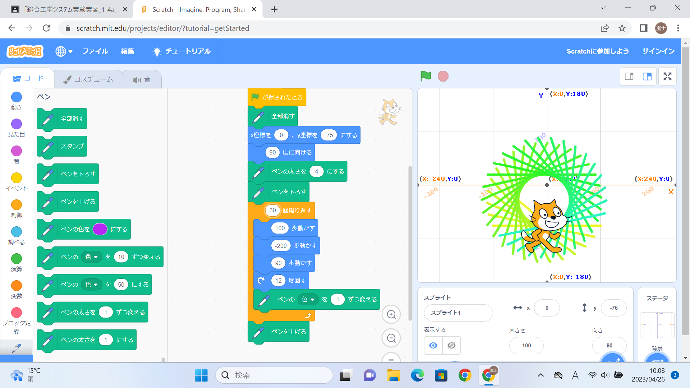
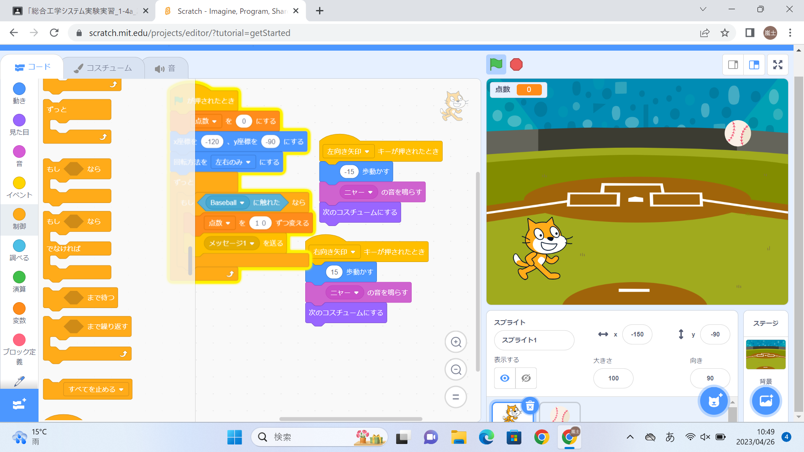

1週目のレポート ： 公大高専１年実習I-1
4a班6番 ars0213
第1週目
1-1 サイエンスアート

1.内容
スクラッチを使って線を書くプログラムを作った。 プログラムの組み立て方を教わった。 猫を動かして丸のような線を描くプログラムを作った。
2.感想
この授業を受けて、スクラッチの使い方を知ることができました。そしてスクラッチでプログラムの作り方がわかるようになってとてもよかったです。 スクラッチを使って丸のような線を描いたときに、芸術のようなものをプログラミングで作れると知ることができました。 そして、これからの授業でのプログラムを作るにあたってこの授業の内容をしっかりと生かしていきたいと思いました。
1-2 ゲーム

1.内容
スクラッチを使ってゲームの作り方を教えてもらった。 ゲームのプログラムを作った。 実際に作ったゲームで遊んだ。
2.感想
スクラッチでゲームを作ってみて私はとても楽しかったです。昔からゲームを作りたいと思っていたので実際に作って遊ぶことができたことにとても驚いています。 また、違うゲームを作りたいと思いました。そしてゲームの作り方が分かったので良かったです。もっと複雑で難しいものも作りたいと思いました。
1-3 ホームページ作成
私のホームページ
1.内容
ホームページの作り方を教えてもらった 実際に自分のホームページを作った。
2.感想
自分のホームページを作り、ホームページの作り方が分かったので良かったです。もしもこれから自分のホームページを作るときはこの授業のことを思い出して作りたいと思いました。